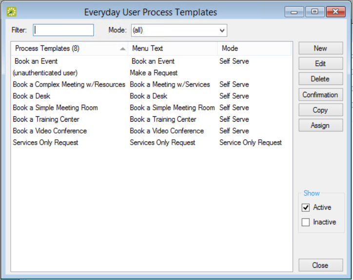

Configuring Everyday User Process Templates
Concept: "Web Process Templates" Are Now Called "Everyday User Process Templates"
If you have previously used older versions of EMS, you may know booking templates as "Web Process Templates." These are now called "Everyday User Process Templates." These templates define user access and booking behavior in {{product_webapp}}, {{product_mobile}}, and {{product_emso}}. Similarly, you may know permissions templates, which control what an Everyday User is able to do, as "Web Security Templates." These are now called "Everyday User Security Templates."

|
Note: In {{product_enterprise}}, the guest (unauthenticated user) everyday user process template is always available and you can have an unlimited number of other everyday user process templates.
In {{product_professional}}, the (unauthenticated user) everyday user process template is always available, but you can have only two additional everyday user process templates.
|
1. On the {{product}} menu bar, click Configuration > Everyday Applications > Everyday User Process Templates. The Everyday User Process Templates window opens on the Everyday User Template tab.

This window lists the process templates that have been defined for your {{product_webapp}} implementation. The pre-defined user called "(unauthenticated user)" is included in all EMS implementations; you use this template to manage settings for anonymous or “guest” users. For a user to be able to view and use this template, you must assign the user to the template. See Configuring Users.

|
Tip: To view all everyday user process templates in your {{product}} database, regardless of status, under Show, click Inactive.
|
2. Click New. The Everyday User Process Template dialog box displays. Enter the information for the new everyday user process template as needed.


|
Warning: The cache must be cleared in the EMS Web App whenever parameter changes are made in the EMS Desktop Client.
|
|
|
Tips: The Request Status field is used to configure booking templates for the "Request/Approval" booking model, in which everyday users request space and administrative users approve those requests (using the Dashboard menu icon). For example, if you set this field to Request, then the booking will not be finalized until an administrator has approved it.
If you are configuring a template for booking desks and workspaces or "hoteling," see this example.
|
Concept: You Use the Request/Approval Model to Oversee "Managed Space"
Configuring Managed Space
Once you have configured facilities (rooms, categories, services, resources, and so on), you can configure special process templates for "managed space," which is meeting space that may require additional oversight and an approval process to finalize a reservation. For example, you may wish to configure a large banquet hall as managed space to ensure that any request to use it is approved by a supervisor. That supervisor would use the Dashboard from the {{product_dtc}} menu bar to view requests for space.

Typically, managed space involves services, expenses, and invoicing that affect multiple stakeholders and departments, and templates designed for this model are typically assigned to Everyday Users of {{product_webapp}}. By contrast, such templates are not recommended for assignment to {{product_emso}} users since Microsoft® Outlook does not show the request status of such a reservation.
Process Overview:
To configure a process template to require supervisory approval:
- When defining an Everyday User Process template for a specialized type of space or room, you set the Request Status field to Request (so it will show as pending in the Dashboard).
- Assign that template to the appropriate everyday users (typically, {{product_webapp}} users so they can only Request reservations for that specialized space.
- Designate users in {{product_dtc}} who will review and approve this type of space request in the Dashboard.
|
|
Note: in the Everyday User Application Settings section...
Enable for Web App means enable the template on {{product_webapp}}.
Enable for Mobile means enable the template for both the EMS Mobile App and the mobile version of the EMS Web App.
Enable for Outlook means enable the template for the EMS for Outlook add-in, which can override booking rules such that users can book a room that is in conflict. For this situation, you can also configure a system-generated email to be sent to the user if any rooms are not available for dates booked. An additional tab becomes available if you create a template with the option enabled, Outlook Conflict Email.
Enable Integration to Microsoft Exchange means enable the template for Microsoft® Exchange when your organization does not use {{product_emso}}.
See Also: Detailed Process Template field definitions.
|
|
You can continue configuring the booking template on additional tabs or just click OK to save your changes.
Saving Your Template Settings
When you have completed entries in all tabs as desired, click OK. Your changes to the everyday user templates are saved.
|
|
Tip: Make sure that you have defined your everyday users so you can assign them to your everyday templates. See Configuring Everyday Users.
|